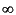

| DirectSD Toolbox |
|
[K,cost] = sdh2 ( sys, T )
[K,cost] = sdh2 ( sys, T, t )
[K,cost] = sdh2 ( sys, T, H )
[K,cost] = sdh2 ( sys, T, method )
[K,cost] = sdh2 ( sys, T, t, H )
[K,cost] = sdh2 ( sys, T, t, method )
[K,cost] = sdh2 ( sys, T, t, H, method )
sdh2 returns the H2-optimal controller
K for standard sampled-data system
and the minimal value of the cost function
cost.
If parameter t is not given
or is empty, optimization is performed with respect to the
generalized H2-measure, which is equivalent
to minimizing the average variance of the output under centered
white noise with unit intensity:
If parameter t (0<=t<T) is specified and non-empty,
instantaneous variance is used for optimization:
t=0).
| sys | model of an LTI plant associated with the standard sampled-data system. |
| T | the sampling period |
| t | time instant in [0,T] for special optimization problems in discrete time |
| H | generalized hold given as an LTI continuous-time model. |
| method | optional parameter that specifies solution algorithm. There are four possible methods: |
If the hold is not given, a zero-order hold is used by default.
| K | discrete LTI model of controller |
| cost | minimal value of the cost function |
F = tf(1, [1 1 0]);
sys = [F F;-F -F];
T = 0.1;
[K,cost] = sdh2(sys, T)
K: zero-pole-gain model 1 x 1
366.55 (z-0.4577)
-----------------
(z+0.873)
Sampling time: 0.1
cost =
0.0286
[1] Chen, T., and B.A. Francis, Optimal Sampled-Data Control Systems. Berlin Heidelberg New York: Springer-Verlag, 1995.
[2] Rosenwasser, E.N., and B.P. Lampe, Computer Controlled Systems: Analysis and Design with Process-orientated Models. London: Springer-Verlag, 2000.
[3] Polyakov, K.Yu., Polynomial Design of Optimal Sampled-data Control Systems, Dr. Sc. Thesis, State University of Ocean Technology, St. Petersburg, 2006 [in Russian].
ch2 H2-optimization of continuous-time systems.
sdl2 L2-optimization of sampled-data systems.
sdh2hinf Mixed
H2/H-optimization of sampled-data systems.
|
|
sdgh2mod | sdh2hinf | |
Copyright © 1999-2006 K. Polyakov.